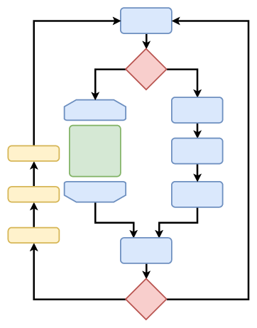
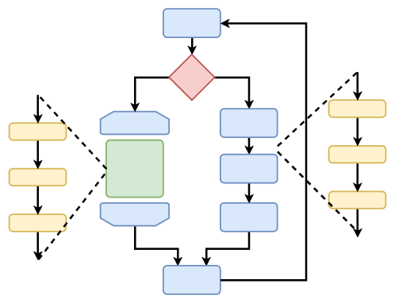

In the beginning of the processor-age, all software was bare metal. This means that the processor is simply executing instructions, directly on the hardware. In contrast to bare metal, most computers nowadays run an operating system. However, many microcontrollers still run bare-metal-code. Everything that we have been doing, was bare metal, too.
When operating without an OS, it becomes more difficult to run multiple tasks. Let’s take the example of a UART, aka the serial port. Imagine a program is running and it has to change a parameter that is fed to program over UART.

The simplest way would be to periodically check if there is a command. Periodically checking for a condition is called polling.
In this example, the main loop is running forever. The program conditionally takes one of two paths (an if-statement). In the left-hand branch, there is a repetition (a for or while loop). Finally, there is one more statement.
Depending on the fact whether or not there is a new command, the left or right path is taken to the start of the loop again. Let’s say that, in case of a new command, the 3 yellow statements have to be executed.
Although polling provides a working solution, it’s not the best solution. There is a additional delay (in this case of 1 if-statement), if a command arrives right after the checking, it has to wait for the next iteration, …
In 1953 (!) the first interrupt-powered computer was invented. An interrupt does exactly what it is named after. It interrupts the current flow of the processor. A good analogy is the raising of a finger, in class.
The example above would just keep on executing the main loop. Irrespective of when the UART comes now, this main loop is interrupted. After interruption, the three yellow statements are executed. Finally, the main loop is resumed at the point where it was left.
As long as there are no interrupt storms, the impact of interrupts is low. They are still used in modern systems and the typical use-cases are asynchronous communication systems, like network cards, mouse movements, timers, or keyboard-key presses.
